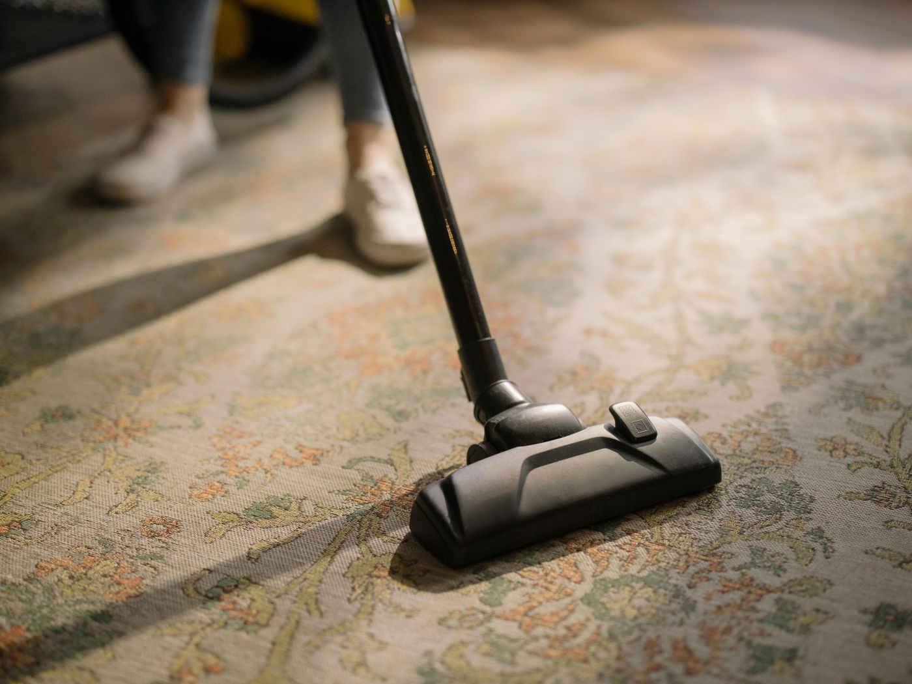

Carpet
Wall-to-wall carpet and stairs, cleaned with truck-mounted hot-water extraction. The soil comes up out of the pile and goes out to the truck.
See how a carpet clean worksRiverside, California
Carpet, upholstery, and tile and stone — cleaned properly, by people who will tell you honestly whether it is worth doing.
Get a look at itWhat we clean
Carpet, upholstery, and tile and stone. That is the whole list. We would rather do three things properly than a long list of things adequately.
Wall-to-wall carpet and stairs, cleaned with truck-mounted hot-water extraction. The soil comes up out of the pile and goes out to the truck.
See how a carpet clean works
Sofas, sectionals and armchairs, cleaned where they sit. We check the fabric first, because not every fabric takes the same treatment.
See upholstery prices
Kitchens, bathrooms and entryways. High-pressure cleaning reaches into the grout lines, where a mop only moves the dirt around.
See tile and stone pricesHow it works
This is what actually happens in your house, in order. Nothing here is a trademark. It is the job, done in full.

Before anything is quoted, we walk the room and look at the floor itself: the fibre, the traffic lanes, and what the marks actually are. A coffee spill and a pet accident need different treatment, and the price should reflect the floor you have.

Every mark gets its own pre-treatment, which then sits for ten minutes before anything mechanical touches the carpet. This is the step that gets skipped when a job is rushed, and it is most of the difference.

Counter-rotating brushes loosen the soil, then water at around 230°F flushes it out and pulls it straight back to the truck. The dirt leaves the house rather than being pushed deeper into the backing.

Before we pack up, the carpet is set with a grooming rake so the fibres dry standing up instead of matted flat. It is a small step that decides how the room looks next week.

Air movers stay running while it dries. You can walk on it in about two hours, and it is fully dry in four to six.
Before and after
 Before
Before
 After
After
 Before
Before
 After
After
 Before
Before
 After
After
These are example photographs of the surfaces and soil types we work on. They are not photographs of our own jobs.
What usually happens
Prices
These are our standard prices. We confirm the total on the walk-through, before any work starts.
| Carpet | |
|---|---|
| Per room three-room minimum | $45 |
| Whole house up to 1,800 sq ft | $219 |
| Stairs | $2.50 per step |
| Pet treatment | $35 per affected area |
| Upholstery | |
| Sofa | $89 |
| Sectional | from $139 |
| Armchair | $45 |
| Tile, stone and rugs | |
| Tile and stone | $0.85 per sq ft |
| Area rugs wool, cleaned in-plant | from $3.50 per sq ft |
| Minimum service call | $135 |
If a spot comes back within 14 days, we come back and redo it. No charge.

Since 2011
Back to Life has been cleaning floors around Riverside since 2011. Ray and Teresa run it, it is still the same family, and the second generation is working now too. There are two trucks, both set up for truck-mounted hot-water extraction, which keeps the work in a small number of hands.
Some floors are worth cleaning and some are worth replacing. We will tell you which.
Straight answers
Where we work
Get a look at it
Send a few details and we will come back to you with a time to walk the room. Or skip the form and call.
Call Back to Life